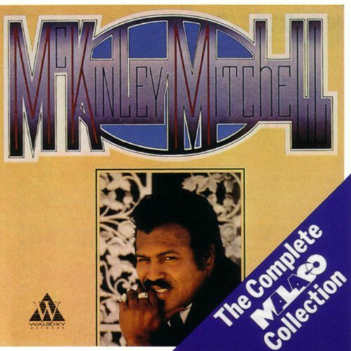

McKinley Mitchell
McKinley Mitchell was an American Chicago-based blues and rhythm and blues singer, who started out performing gospel music. His first recorded single was "Rock Everybody Rock" for Boxer Records in 1959. His 1962 record, "The Town I Live In", became a national R&B hit on the Chicago One-derful label. The record peaked at number 8 on the US Billboard R&B chart. In his later career Mitchell returned to Mississippi, and recorded I Won't Be Back for More in 1984.
Complete Discography & Tracklists (4)